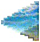

 
Requirements:
- Your site must include some weirdcore/webcore elements to qualify.
- All weirdcord server rules also apply here, ESPECIALLY NSFW CONTENT!
- No hate speech or bigotry.
- No being advertisement-focused.
It is impossible to enumerate everything that is not allowed. For this reason, we (the webmasters) reserve the
right to remove a site if we feel it is outside of our own personal bounds.
Add yourself to the members list
Add a unique slug, your webpage's name, and your webpage's URL to the members list on GitHub in a pull request.
Pull requests can also be used to change your existing entry or delete your entry.
If you don't have a GitHub account, fill out this form instead:
If you're editing your existing entry, make sure to use the same slug. If you're deleting your existing entry, leave
the URL field blank.
Add links on your webpage
Once you're on the members list, add links on your webpage to http://localhost:4000/YOUR-SLUG/next and
http://localhost:4000/YOUR-SLUG/previous, replacing YOUR-SLUG with the slug you chose.
Feel free to include a link to http://localhost:4000/ as well.
Check if the <aside>
element is right for you.